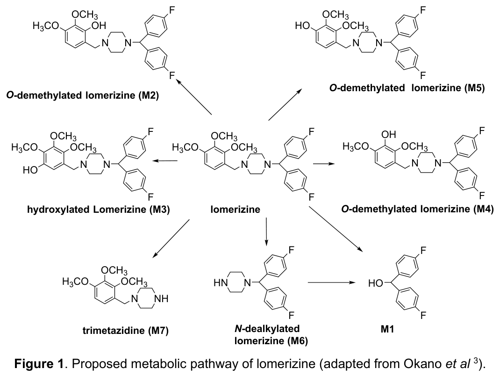

Technical Letters · TL13 (replaces TL2018/02)
Edition v2.0, 2018 (version 2.0) · effective 31 January 2018 · superseded
Retrieved on 25 November 2026 from https://www.wada-ama.org/sites/default/files/resources/files/tl13_trimetazidine.pdf
Editions: v3.0, 2021 (current) · v2.0, 2018
p. 1
ANALYSIS AND REPORTING OF TRIMETAZIDINE FINDINGS
*The approval by the WADA Executive Committee is applicable only to Technical Letters issued after November 2019.
The World Anti-Doping Agency wishes to draw the attention of the Laboratories to the following remarks and instructions on the analysis and reporting of trimetazidine (TMZ).
The detection of TMZ [1-(2,3,4-trimethoxybenzyl)piperazine] in urine may result from the metabolism of lomerizine [1-[bis(4-fluorophenyl)methyl-4-(2,3,4-trimethoxybenzyl)piperazine], a permitted drug used for the treatment of migraine.1,2,3

Figure 1. Proposed metabolic pathway of lomerizine (adapted from Okano et al 3 ).
Note: Lomerizine (the parent compound), which has a short half-life, can be found in urine at concentrations much lower than that of TMZ (minor Metabolite), in a ratio of 1/20 or less. However, the concentration of the lomerizine M6-Metabolite is usually higher than that of TMZ.
¹Awata N, Kawashima T and Sakai T. "Metabolism of lomerizine hydrochloride in humans" Jpn Pharmacol Ther 22: 173-183, 1994.
²Sigmund G et al. "Doping control analysis of trimetazidine and characterization of major metabolites using mass spectrometric approaches". Drug Test Anal. 6(11-12):1197-205, 2014.
³Okano M, Thevis M, Sato M and Kageyama S. "Analytical Detection of trimetazidine produced by metabolic conversion of lomerizine in doping control analysis". Drug Test Anal. 8(8):869-74, 2016.
p. 2
*The approval by the WADA Executive Committee is applicable only to Technical Letters issued after November 2019.
Therefore, when detecting TMZ in urine, Laboratories shall:
- Test for the presence of the non-prohibited lomerizine AND its specific Metabolite(s) [at least the N-dealkylated M6 Metabolite, 1-Bis-(4-fluorophenyl)-methylpiperazine]⁴ using e.g. LC-MS/MS targeting the diagnostic precursor/product ion pairs shown below, which are obtained from the protonated molecules of TMZ, lomerizine and lomerizine M6-Metabolite;
| Transition (m/z)3, 5.Trimetazidine | Transition (m/z)3, 5.Lomerizine | Transition (m/z)3, 5.Lomerizine M6-Metabolite |
|---|---|---|
| 267>181 | 469>181 | 289>203 |
| 267>166 | 469>203 | 289>183 |
| 267>136 | 469>166 |
Note: The Limit of Detection (LOD) of the Tests Method(s) used for the detection of lomerizine and its M6 Metabolite should be lower than the corresponding LOD for TMZ.
-
Report the result as a Negative Finding if it is considered that the presence of TMZ in the Sample could have resulted from the permitted administration of lomerizine;
-
When reporting an Adverse Analytical Finding for TMZ, include a comment in the Test Report specifying "Neither lomerizine nor its Metabolite(s) (at least M6) were detected in the Sample".
Should you have any further questions, please do not hesitate to contact the WADA Science Department.
⁴The reference standards for lomerizine and its M6 Metabolite can be purchased from Sigma-Aldrich (L6295 and 552402, respectively) https://www.sigmaaldrich.com/catalog/product/aldrich/552402?lang=en®ion=CA
⁵Ren Y et al. "Determination of lomerizine in human plasma by liquid chromatography/tandem mass spectrometry and its application to a pharmacokinetic study". J Chromatogr B Analyt Technol Biomed Life Sci. 947-948: 96-102, 2014.
Retrieved on 25 November 2026 from https://www.wada-ama.org/sites/default/files/resources/files/tl13_trimetazidine.pdf